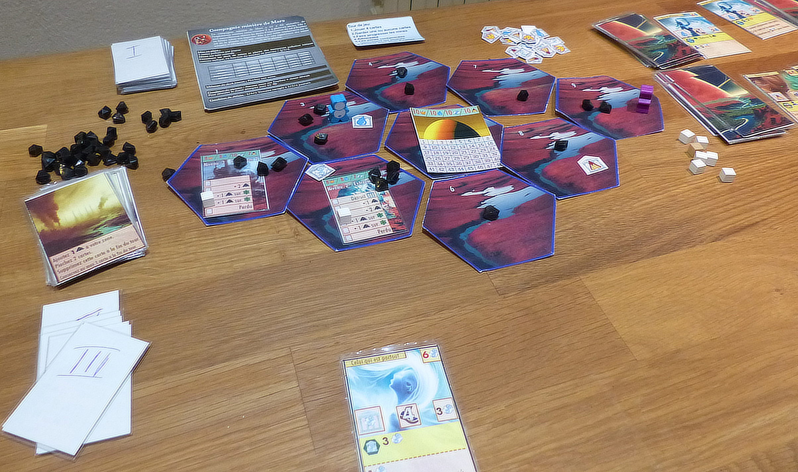
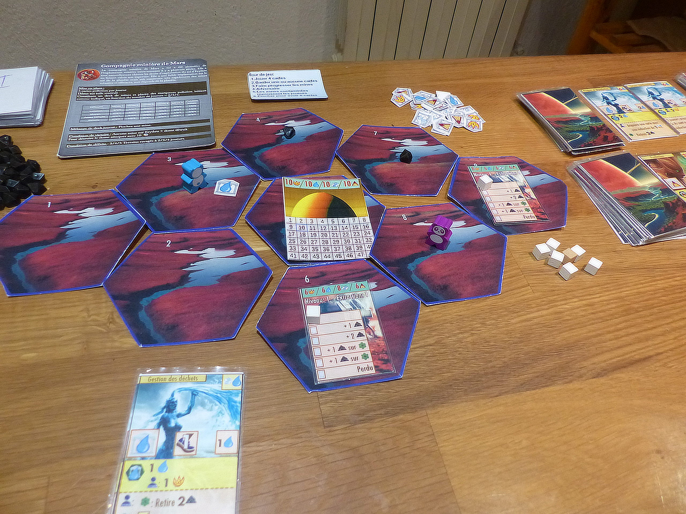
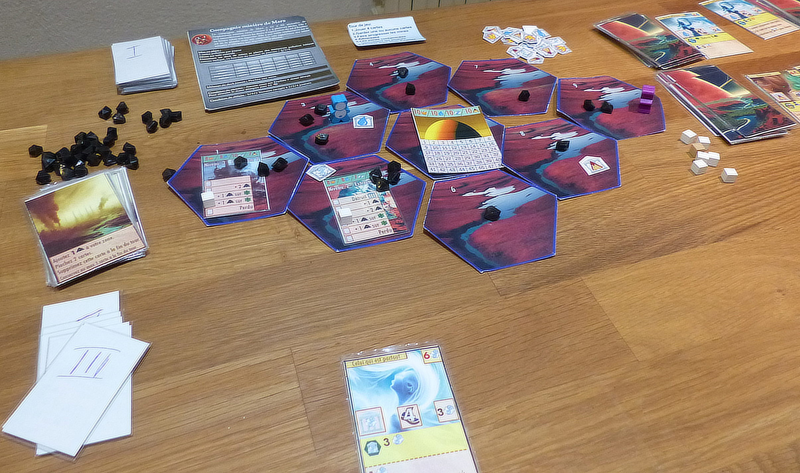
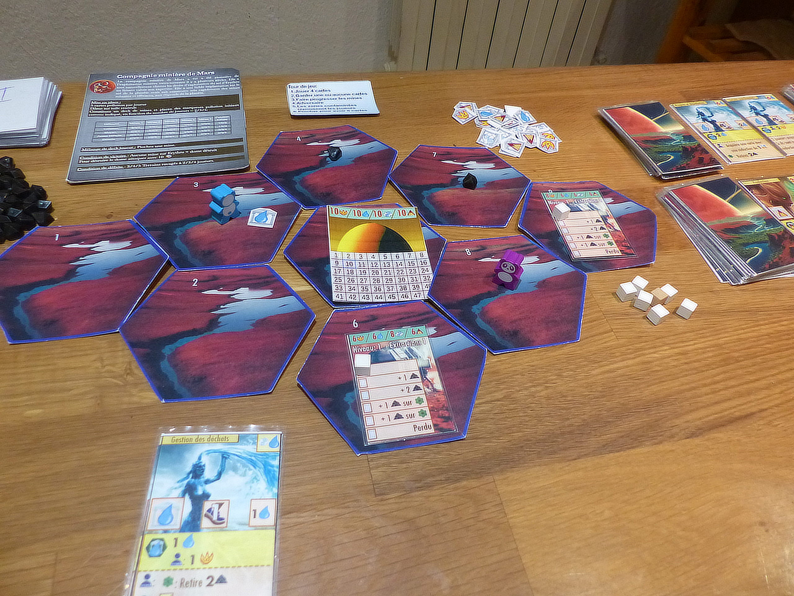
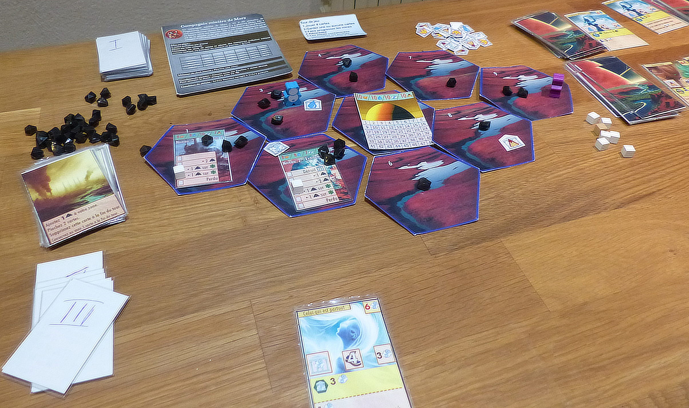
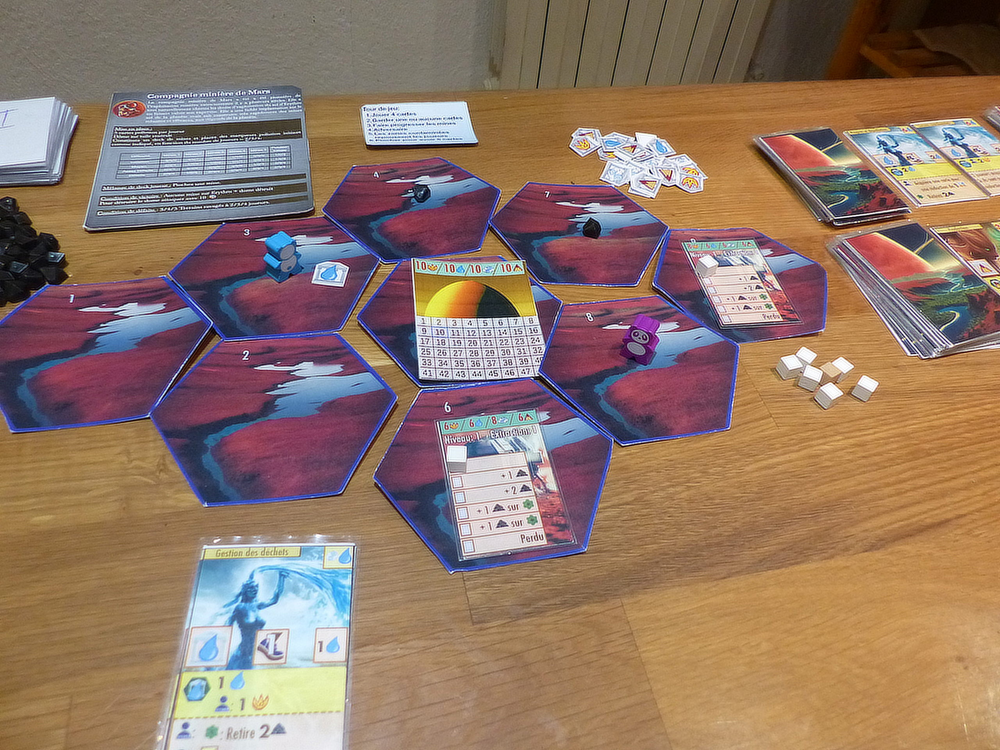

Erythro — Jeu de société
|
|
Caractéristiques du jeu
Coopérez pour défendre la planète.Dans Erythro, vous aidez une planète à se défendre contre un exploitant minier qui est en train de polluer son sol. Coopérez pour détruire les mines qu’il installe et dépolluer le sol avant qu’il ne soit contaminé. Les joueurs incarnent des ambassadeurs de la planète qui tentent de la sauver. Chaque ambassadeur maitrise 2 éléments parmi l’eau, le feu, la terre et l’air. Il ne peut collecter de l’influence que pour ces deux éléments et ne peut que déclencher des actions concernant ces deux éléments. Les ambassadeurs sont en perpétuelle communion avec la planète ce qui leur permet de déclencher de terribles catastrophes naturelles qui vont repousser l’envahisseur. Les joueurs construisent des sanctuaires à l’effigie des 4 éléments, collecter de l’influence auprès des éléments et dépolluer la surface d’Erythro. Ils vont aussi utiliser leur influence pour acquérir de nouvelles compétences ou pour provoquer des catastrophes qui détruiront des mines. |

